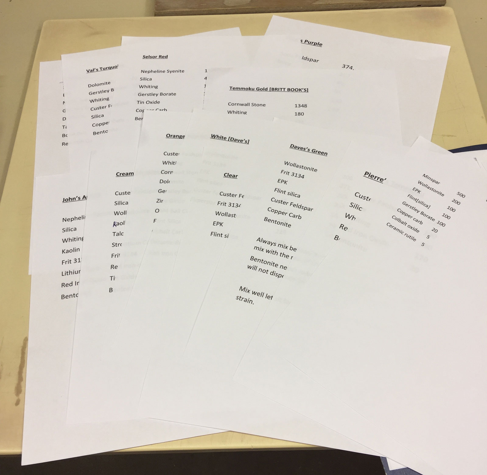
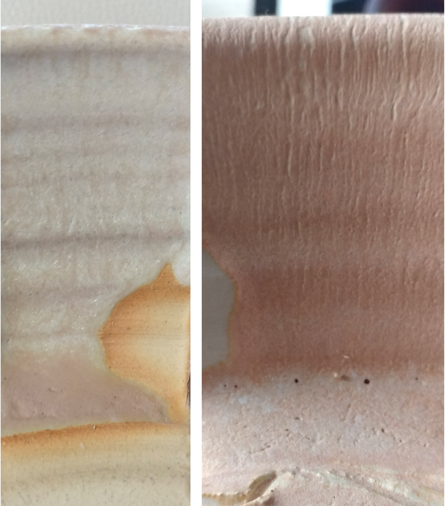
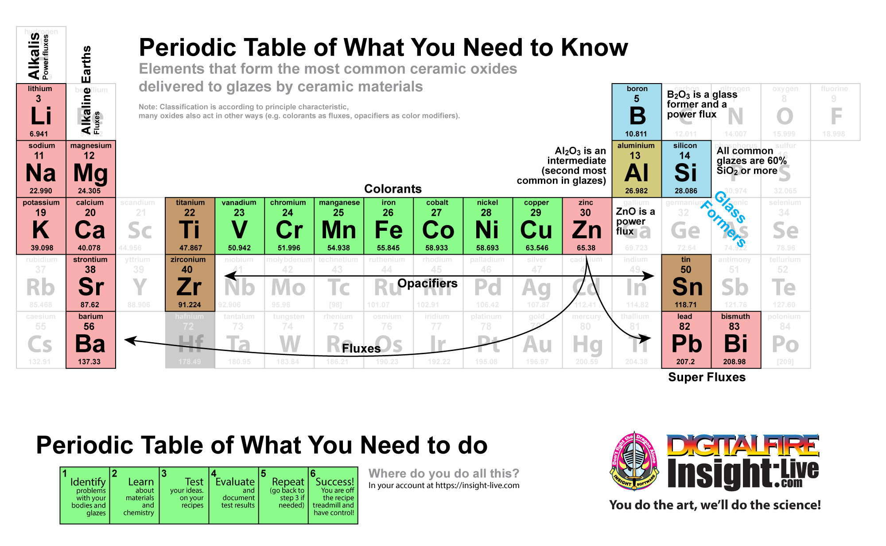
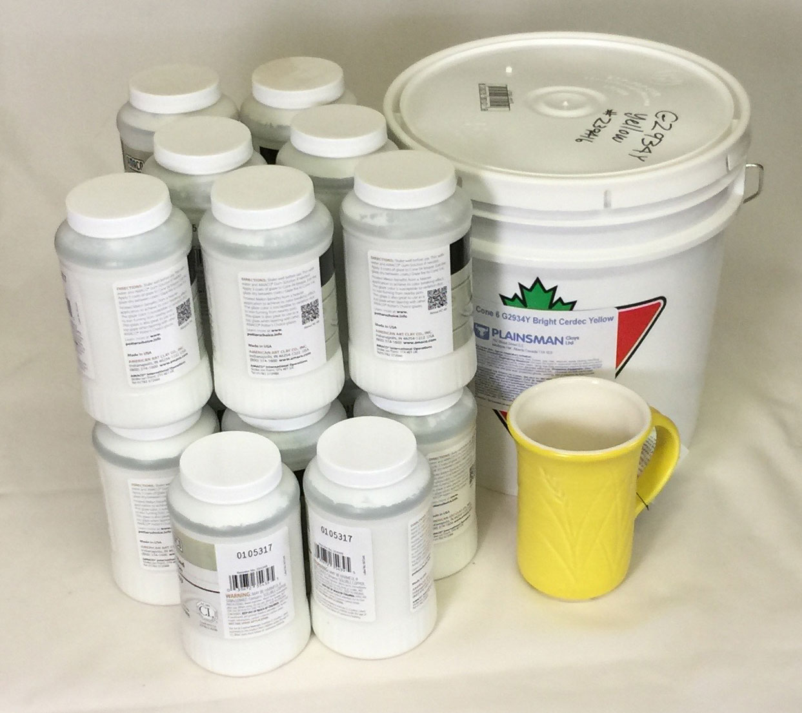
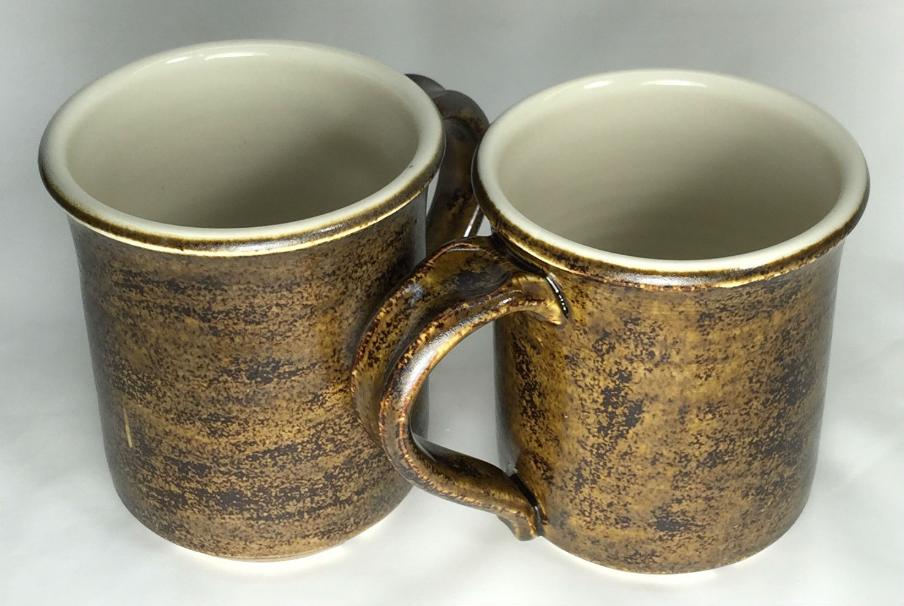
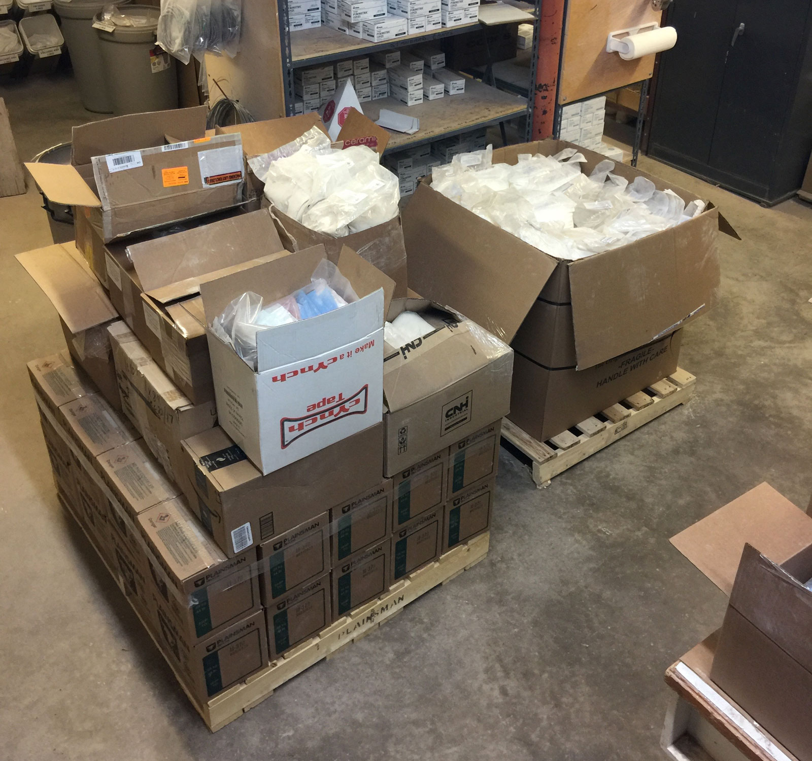
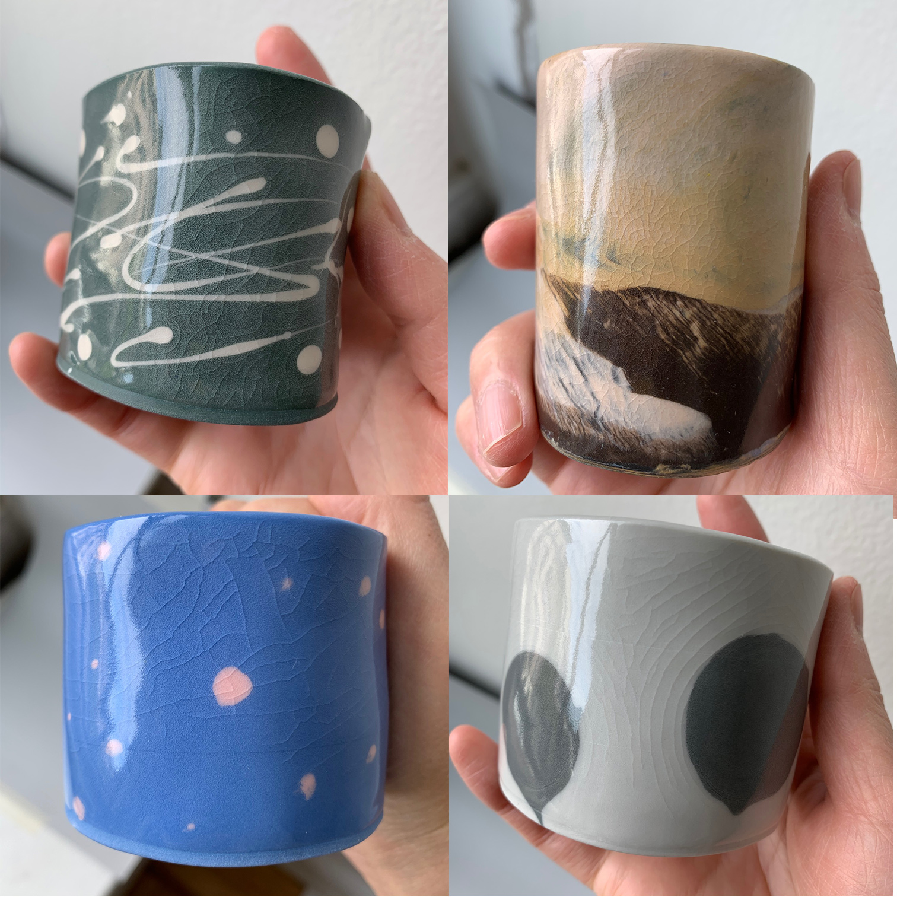
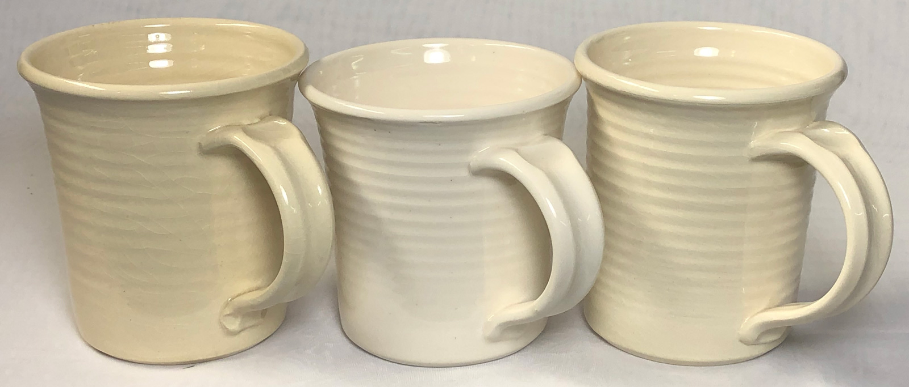
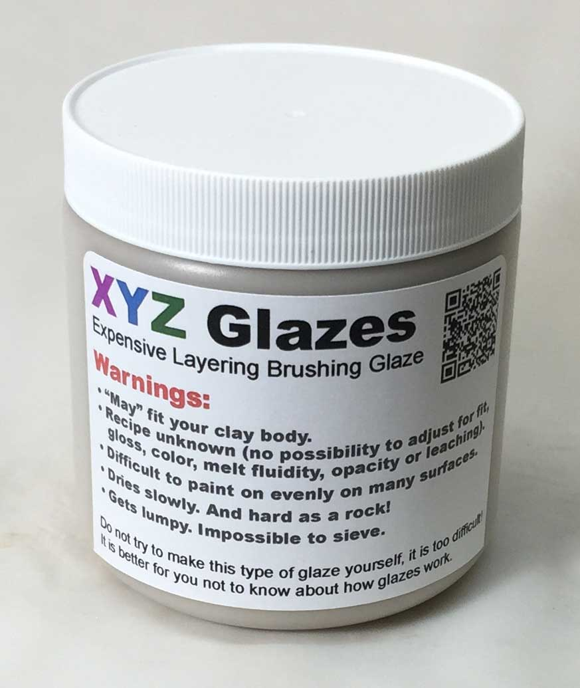

A Low Cost Tester of Glaze Melt Fluidity
A One-speed Lab or Studio Slurry Mixer
A Textbook Cone 6 Matte Glaze With Problems
Adjusting Glaze Expansion by Calculation to Solve Shivering
Alberta Slip, 20 Years of Substitution for Albany Slip
An Overview of Ceramic Stains
Are You in Control of Your Production Process?
Are Your Glazes Food Safe or are They Leachable?
Attack on Glass: Corrosion Attack Mechanisms
Ball Milling Glazes, Bodies, Engobes
Binders for Ceramic Bodies
Bringing Out the Big Guns in Craze Control: MgO (G1215U)
Can We Help You Fix a Specific Problem?
Ceramic Glazes Today
Ceramic Material Nomenclature
Ceramic Tile Clay Body Formulation
Changing Our View of Glazes
Chemistry vs. Matrix Blending to Create Glazes from Native Materials
Concentrate on One Good Glaze
Copper Red Glazes
Crazing and Bacteria: Is There a Hazard?
Crazing in Stoneware Glazes: Treating the Causes, Not the Symptoms
Creating a Non-Glaze Ceramic Slip or Engobe
Creating Your Own Budget Glaze
Crystal Glazes: Understanding the Process and Materials
Deflocculants: A Detailed Overview
Demonstrating Glaze Fit Issues to Students
Diagnosing a Casting Problem at a Sanitaryware Plant
Drying Ceramics Without Cracks
Duplicating Albany Slip
Duplicating AP Green Fireclay
Electric Hobby Kilns: What You Need to Know
Fighting the Glaze Dragon
Firing Clay Test Bars
Firing: What Happens to Ceramic Ware in a Firing Kiln
First You See It Then You Don't: Raku Glaze Stability
Fixing a glaze that does not stay in suspension
Formulating a body using clays native to your area
Formulating a Clear Glaze Compatible with Chrome-Tin Stains
Formulating a Porcelain
Formulating Ash and Native-Material Glazes
G1214M Cone 5-7 20x5 glossy transparent glaze
G1214W Cone 6 transparent glaze
G1214Z Cone 6 matte glaze
G1916M Cone 06-04 transparent glaze
Getting the Glaze Color You Want: Working With Stains
Glaze and Body Pigments and Stains in the Ceramic Tile Industry
Glaze Chemistry Basics - Formula, Analysis, Mole%, Unity
Glaze chemistry using a frit of approximate analysis
Glaze Types, Formulation and Application in the Tile Industry
Having Your Glaze Tested for Toxic Metal Release
High Gloss Glazes
Hire Us for a 3D Printing Project
How a Material Chemical Analysis is Done
How desktop INSIGHT Deals With Unity, LOI and Formula Weight
How to Find and Test Your Own Native Clays
I have always done it this way!
Inkjet Decoration of Ceramic Tiles
Is Your Fired Ware Safe?
Leaching Cone 6 Glaze Case Study
Limit Formulas and Target Formulas
Low Budget Testing of Ceramic Glazes
Make Your Own Ball Mill Stand
Making Glaze Testing Cones
Monoporosa or Single Fired Wall Tiles
Organic Matter in Clays: Detailed Overview
Outdoor Weather Resistant Ceramics
Painting Glazes Rather Than Dipping or Spraying
Particle Size Distribution of Ceramic Powders
Porcelain Tile, Vitrified Tile
Rationalizing Conflicting Opinions About Plasticity
Ravenscrag Slip is Born
Recylcing Scrap Clay
Reducing the Firing Temperature of a Glaze From Cone 10 to 6
Setting up a Clay Testing Program in Your Company or Studio
Simple Physical Testing of Clays
Single Fire Glazing
Soluble Salts in Minerals: Detailed Overview
Some Keys to Dealing With Firing Cracks
Stoneware Casting Body Recipes
Substituting Cornwall Stone
Super-Refined Terra Sigillata
The Chemistry, Physics and Manufacturing of Glaze Frits
The Effect of Glaze Fit on Fired Ware Strength
The Four Levels on Which to View Ceramic Glazes
The Majolica Earthenware Process
The Potter's Prayer
The Right Chemistry for a Cone 6 Magnesia Matte
The Trials of Being the Only Technical Person in the Club
The Whining Stops Here: A Realistic Look at Clay Bodies
Those Unlabelled Bags and Buckets
Tiles and Mosaics for Potters
Toxicity of Firebricks Used in Ovens
Trafficking in Glaze Recipes
Understanding Ceramic Materials
Understanding Ceramic Oxides
Understanding Glaze Slurry Properties
Understanding the Deflocculation Process in Slip Casting
Understanding the Terra Cotta Slip Casting Recipes In North America
Understanding Thermal Expansion in Ceramic Glazes
Unwanted Crystallization in a Cone 6 Glaze
Using Dextrin, Glycerine and CMC Gum together
Volcanic Ash
What Determines a Glaze's Firing Temperature?
What is a Mole, Checking Out the Mole
What is the Glaze Dragon?
Where do I start in understanding glazes?
Why Textbook Glazes Are So Difficult
Working with children
Glaze Recipes: Formulate and Make Your Own Instead
Description
The only way you will ever get the glaze you really need is to formulate your own. The longer you stay on the glaze recipe treadmill the more time you waste.
Article
The traffic in glaze recipes, among potters who mix their own, has had a net negative effect on functional ceramics in education, hobby, and industry. Books and the internet are filled with recipes that are illogical and emphasize appearance at the expense of safety, practicality, or unjustified cost. 'Affairs' with these 'naked' (undocumented) recipes have left many numbed regarding their accountability and even ill-equipped to recognize true quality. This trade in recipes fosters a culture that runs counter to the idea of 'understanding' and controlling our materials and recipes, it breeds ignorance of oxide and material sciences and the true nature of the ceramic process. It deludes many into an 'easy-fix' mentality that seeks 'foolproof' solutions that end up being blind allies that waste years and teach nothing. Implied 'ethics' suggest that the traffic in recipes be accompanied by documentation to prove givers conscientious and by critical analysis and testing on the part of recipients willing to 'understand' and adjust. Weak, leachable, difficult-to-clean, crazed, shivered, leaching glazes hurt the reputation of the pottery and ceramic industry. It is time that a 'want-to-know-why' mindset toward formulating and adjusting glazes on the oxide and material level is fostered in students. It is time that a stigma is attached to joining the 'illicit trade' in recipes and using trial-and-error bull-in-a-china-shop approaches to glaze formulation.
We recommend a 'base glaze with variations' starting model. As your understanding of a base glaze improves over a period of years you can develop the ability to identify its mechanism and learn to transplant them into different bases. In this way, you can minimize the number of base recipes you use. In addition, as you improve each base (e.g. its application properties, fired harness, fit adjustability, etc.) all the variations based on it will inherit the improvements.
In education and pottery circles the trade in recipes has encouraged a 'roulette wheel' approach to choosing glazes and in big industry there is a brain-drain toward suppliers and consultants while many manufacturers are becoming more and more helpless. At Digitalfire we personify these dangerous trends and attitudes as 'The Dragon'. The dragon wants you to believe that casual potters are exempt from technical concerns. He fosters blissful attitudes that keep us on an endless treadmill of glaze recipe experimentation and disappointment or on suppliers that lack a connection to unique circumstances and customer-specific problems. The dragon wants us to think that glaze chemistry is too complicated and too much trouble.
The Formula Viewpoint, Key to Taking Control
Chemistry, that is, viewing your glazes as formulas of oxides rather than recipes of materials, is an invaluable tool to deal with things like hardness, strength, porosity, leaching, thermal shock resistance, chip resistance, glaze fit, color compatibility, of your functional ware. A typical formula contains eight or so oxides and it takes a lot less study to figure out what these contribute than it does to figure out what 100 different materials do. Glaze software, like Insight-live, provides the simplest way to work with glaze formulas.
Related Information
We fight the dragon that others do not see

This picture has its own page with more detail, click here to see it.
There are thousands of ceramic glaze recipes floating around the internet. People dream of finding that perfect one, but they often only think about the visual appearance, not of the usability, function, safety, cost or materials. That resistance to understanding your materials and glazes and learning to take control is what we personify as the dragon. Using the resources on this site you could be fixing, adjusting, testing, formulating your own glaze recipes. Start with your own account at insight-live.com.
Glaze recipes online waiting for a victim to try them!

This picture has its own page with more detail, click here to see it.
You found some recipes. Their photos looked great, you bought $500 of materials to try them, but none worked! Why? Consider these recipes. Many have 50+% feldspar/Cornwall/nepheline (with little dolomite or talc to counteract their high thermal expansion, they will craze). Many are high in Gerstley Borate (it will turn the slurry into a bucket of jelly, cause crawling). Others waste high percentages of expensive tin, lithium and cobalt in crappy base recipes. Metal carbonates in some encourage blistering. Some melt too much and run onto the kiln shelf. Some contain almost no clay (they will settle like a rock in the bucket). A better way? Find, or develop, fritted, stable base transparent glossy and matte base recipes that fit your body, have good slurry properties, resist leaching and cutlery marking. Identify the mechanisms (colorants, opacifiers and variegators) in a recipe you want to try and transplant these into your own base (or mix of bases). And use stains for color (instead of metal oxides).
What has the trust in online recipes come to?

This picture has its own page with more detail, click here to see it.
These tests of a recipe called "Strontium Crystal Magic". The potter tried it on different bodies and firings. But instead of producing the magic crystals like the pictures, the surfaces fired totally matte. Reasoning "why would anyone put a recipe on line that does not work", she blamed one of the materials. Others fed that with rumours of claimed issues in its consistency. Admittedly, this glaze is meant for layering over others - but the source did not say that. This underscores misguided trust in trafficked recipes that most often lack sufficient documentation. Crystal glazes, by necessity, need to have a high melt fluidity. The crystals develop best with a specific cooling curve having a controlled fall at a narrow temperature range. Cool faster, they don't grow, slower and they matte the entire surface. Other factors, like clay body and glaze thickness are involved. People who post glaze recipes like this often do not document them well because they do not fully understand their mechanisms.
Trying to avoid knowing anything about glaze chemistry? Be ready for drama!

This picture has its own page with more detail, click here to see it.
Maybe you don't think it is necessary to know anything about glaze chemistry to be a potter. Or a technician at a production facility. This thinking depends on how much mystery you mind tolerating. Because the reason for many of the problems you will encounter with glazes relates fundamentally to their chemistry. Perhaps you have other "social" actors in your sphere who also specialize in the "know as little technical stuff as possible" mindset. Who treat glazes like acrylic paint that comes in tubes - it is just color! From these people, you will get buying advice on expensive jars of tacky-looking "goop" that you have to laboriously paint on in layers. Or it will mean you'll be more likely to get trapped on the recipe treadmill, addicted to the traffic of recipes that never seem to work.
Better to mix your own cover glazes for production?

This picture has its own page with more detail, click here to see it.
Yes. In this case the entire outside and inside of the mug need an evenly applied coat of glaze. For hobby this makes sense. But in production cover brushing makes less sense. The right pail has 2 gallons of G2934Y base with 10% Cerdec yellow stain: $135. Cost of brushing jars with the same amount: $600+! And each jar logs 10-15 minutes painting time plus waiting between coats. The one in the pail is a true dipping glaze (unlike many commercial ones that dry slowly and drip-drip-drip). This one dries immediately after dipping in a perfectly even layer (if mixed according to our instructions). And a bonus: This pail can be converted to brushing or base-layering versions using CMC gum.
Commercial glazes on decorative surfaces
Your own on food surfaces

This picture has its own page with more detail, click here to see it.
These cone 6 porcelain mugs are hybrid. Three coats of a commercial glaze painted on the outside (Amaco PC-30) and my own liner glaze, G2926B, poured in and out on the inside. When commercial glazes (made by one company) fit a stoneware or porcelain (made by another company) it is by accident, neither company designed for the other! For inside food surfaces make or mix a liner glaze already proven to fit your clay body, one that sanity-checks well (as a dipping glaze or a brushing glaze). In your own recipes you can use quality materials that you know deliver no toxic compounds to the glass and that are proportioned to deliver a balanced chemistry. Read and watch our liner glazing step-by-step and liner glazing video for details on how to make glazes meet at the rim like this.
Low Temperature Heaven:
Commercial underglazes, make your own clear overglaze

This picture has its own page with more detail, click here to see it.
Decorate ware with the underglazes at the leather hard stage, dry and bisque fire it and then dip-glaze in a transparent that you make yourself (and thus control). These mugs are fired at cone 03. All have the same transparent glaze (G2931K), all were decorated with the same underglazes. Notice how bright the colors are compared to middle or high temperature. On the left is a porous talc/stoneware blend (Plainsman L212), rear is a fritted Zero3 stoneware and right is Zero3 fritted porcelain. When mixed properly you can dip ware in this glaze and it covers evenly, does not drip and dries enough to handle in seconds! Follow the Zero3 firing schedule and you will have ware of amazing quality.
Think the idea of mixing your own glazes is dead? Nope!

This picture has its own page with more detail, click here to see it.
These are two pallets (of three) that went on a semi-trailer load to a Plainsman Clays store in Edmonton this week. They are packed with hundreds of bags of powders used to mix glazes. More and more orders for raw ceramic materials are coming in all the time. Maybe you are using lots of bottled glazes but for a cover or a liner glaze it is better to mix your own. And cheaper! And there are lots of recipes and premixed powders here to do it. One of the big advantages is that when you dip ware into a properly mixed slurry it goes on perfectly even, does not run and dries on the bisque in seconds. No bottled glaze can do that.
Another compelling reason for DIY casting bodies and glazes

This picture has its own page with more detail, click here to see it.
These are four different cone 6 commercial glazes made by a popular US manufacturer. The body is a cone 6 casting porcelain made by another popular manufacturer. They are all crazing! This is visible because the glaze is transparent, but most often it is much more difficult to see. Guess what many people are doing? Ignoring the problem and selling the ware! Assuming you are not one of them - which company is at fault? Neither. They cannot assure their product fits those of others. Mid-fire porcelains craze glazes if they lack sufficient silica (20% is minimum) or don't vitrify. Unfortunately, the recipe of the porcelain is proprietary. Wait a minute - no, it isn't. These recipes are well-known. You already have a propeller mixer and scale to mix casting slip, why not mix your own porcelain from a recipe (e.g. L3778D or derivative)? Or, why not mix your own transparent brushing glaze or dipping glaze? Start with the G2926B recipe, it has lots of documentation, and the recipe can be adjusted to deal with fit issues on any clay body.
These pieces reveal four benefits of making your own low fire glazes

This picture has its own page with more detail, click here to see it.
These were fired at cone 04. All three transparent glazes are on the same body (made from talc and ball clay). And fired at the same temperature - cone 04. Left to right: Amaco LG10, G3879C and Crysanthos SG213. We mix the middle one ourselves, from a recipe that employs a high percentage of Fusion Frit F-524. The first of four obvious benefits is evident: While frit F-524 is expensive, the glass it produces is more transparent and less iron-contaminated - so it transmits the whiter body color better. Second, the two commercial glazes are crazing. We fixed that using another expensive material, the super low expansion Ferro Frit 3249 (or its equivalent Fusion Frit F-69). Although containing significant MgO, that frit is an amazing melter even at this low temperature. Third, notice that the outer two mugs have micro-pinholes and surface defects that the middle one does not have. The reason for that is not obvious but it could be they have lower melt fluidity. The fourth benefit - the recipe can be adjusted to improve it. Yes, mixing your own glazes can really pay off in ware quality. At stoneware temperatures the opposite can also be achieved by mixing your own - creating glazes that use less expensive and more readily available materials.
Brush-on commercial pottery glazes are perfect? Not quite!

This picture has its own page with more detail, click here to see it.
Brushing glazes are great sometimes. But they would be even greater if the recipe was available. Then it would be possible to make it if they decide to discontinue the product. Or if your retailer does not have it. Or to make a dipping glaze version for all the times when that is the better way to apply. The glaze manufacturer did not consider glaze fit with your clay body, if they work well together it is by accident. But if you have transparent and matte base recipes that that work on your clay body then adding stains, variegators and opacifiers is easy. And making a brushing glaze version of any of them. Don't have base recipes??? Let's get started developing them with an account at insight-live.com (and the know-how you will find there)!
Global supply chain issues?
A DIY mindset can make you more resilient
This picture has its own page with more detail, click here to see it.
The more complex your supplier's supply chain, the more likely they won't be able to deliver. And that prices will rise even further. How can you adapt to disruptions, even turn them into a benefit? Historically, pottery has been a shining star of resilience and independence because the materials were in the ground nearby. You cannot likely head out to the nearest hill with your wheelbarrow to get clay, but you can do something even better.
Rather than viewing these containers as full of specific brand-name clays, minerals and man-made powders, it is better to view them as full of materials that supply the physical properties and chemistries needed to make bodies, glazes, engobes, slips, etc. By characterizing your glazes and bodies, using an effective record-keeping system, you can not only adjust recipes to adapt to changing supplies, but even improve them in the process (adjusting glaze thermal expansion, temperature, surface, color, etc). Or, use materials native to your area. It is not rocket science; it is just work and gradual learning accompanied by organized record-keeping, good labelling and interpretation skills.
Michael Cardew might be turning over in his grave!
This picture has its own page with more detail, click here to see it.
This post got a lot of negative reaction on social media. To be clear, I work both sides of the fence, making my living on selling prepared glazes and clay bodies but I get my satisfaction being closer to the materials and processes. That is what enables me to give customer support. I am not an artist, ceramic art is outside the scope of this page. For part of my life in the craft of pottery I am also guilty of what I lament below. In all my years dealing with customer traffic at our store I have never once had a customer that was offended by seeing new clay and glaze recipes we are discovering in the studio and lab, that are better and cheaper than prepared ones. But online some are somehow offended by what follows. 80 manufacturers are selling convenience and encouraging disconnection - although I work for one of them I am a voice of caution about this.
This book was once a “Bible” of hobby and professional potters. They were independent and resourceful. They made their own clays and glazes, knew the materials, built their own kilns. Now we scan social media sites for ideas on layering expensive prepared goopy brushing glazes and hope they melt together into something presentable. Many have even forgotten how to wedge clay properly. We describe processes using mystical art language and exchange likes and poor advice on social media. Those who still know how to retotal a recipe and venture into mixing their own often end up in the online trafficking of an endless parade of recipes that don’t work. Now we even outsource design to AI. Even Nigeria, the very country about whom Cardew wrote, has lost its pottery tradition.
I never appreciated the book back there. Even though he came to visit us in 1973. I have always just taken whatever clay I needed out of our warehouse, but now that I very often make my own clay it really resonates. I got this copy on eBay, I value it as an inspiration to be more closely connected with the planet and the minerals it gifts us (of course I would not do everything as he does). He was no dinosaur, he understood and taught glaze chemistry and material mineralogy, his work was the basis for many prepared glazes we buy today. "Progress" is defined by some as convenience products that make modern ceramics easy. But I believe that, for many, progress is arming yourself with a little more understanding - it enables making better quality ware, in less time, for less expense and time than with prepared products.
Links
| Articles |
G1214Z Cone 6 matte glaze
This glaze was developed using the 1214W glossy as a starting point. This article overviews the types of matte glazes and rationalizes the method used to make this one. |
| Articles |
What is the Glaze Dragon?
At Digitalfire we use a Dragon to personify the kinds of thinking that prevent potters, educators and technicians from understanding and therefore controlling their ceramic glazes. |
| Articles |
Ball Milling Glazes, Bodies, Engobes
Industries ball mill their glazes, engobes and even bodies as standard practice. Yet few potters even have a ball mill or know what one is. |
| Projects |
Recipes
|
| Glossary |
Cone 6
Also called "middle temperature" by potters, cone 6 (~2200F/1200C) refers to the temperature at which most hobby and pottery stonewares and porcelains are fired. |
| Glossary |
Limit Formula
A way of establishing guideline for each oxide in the chemistry for different ceramic glaze types. Understanding the roles of each oxide and the limits of this approach are a key to effectively using these guidelines. |
| Glossary |
Limit Recipe
"Recipe logic" is the ability to sanity-check ceramic glaze recipes on sight, by noting that materials present and their relative percentages. |
| Recipes |
G2926B - Cone 6 Whiteware/Porcelain transparent glaze
A base transparent glaze recipe created by Tony Hansen, it fires high gloss and ultra clear with low melt mobility. |
 PayPal | No tracking, No ads, No paywall, No transient content! Just organized, concise information constantly updated and improved. Was this helpful? Consider supporting me. |
| By Tony Hansen Follow me on        |  |
Got a Question?
Buy me a coffee and we can talk 

https://digitalfire.com, All Rights Reserved
Privacy Policy